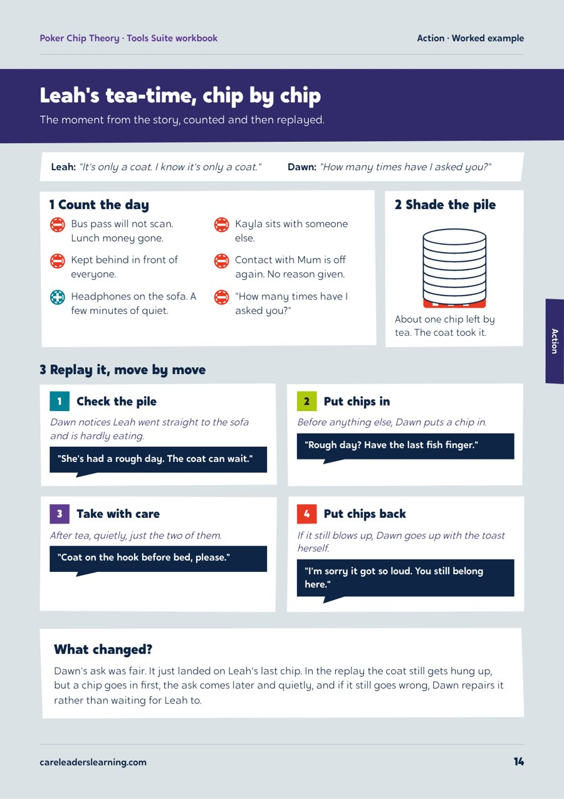

Darlington Virtual School: the training designated teachers designed for themselves
Designated teachers in Darlington told us most of their training ticked a box and changed nothing. So they designed the alternative with us: Designated Leaders, a 10-month programme that treats them as leaders, not just liaisons.


The starting point
Every school must have a designated teacher for children in care. It is a statutory role, but the training and support rarely match its weight. Designated teachers sit between the child, the school, social care and home, and are often left to find their own resources. Calvin Kipling MBE, Darlington’s Virtual School Head at the time, asked us to build a leadership programme for them, and to build it with them.
What we heard
On 10 April 2025, 8 designated teachers spent an afternoon telling us what makes training worth their time. They were clear about what doesn’t work: low-level content, buzzwords, long online sessions, and trainers with no experience of schools or social care. They wanted practical tools, time with each other, and facilitators with lived and professional experience. A follow-up survey at the end of April asked for more ideas.
“Something that you can take back to the school and actually use”
What we did
Listen Designated teachers pitched the worst training programme they could imagine. We reversed each pitch into a fix, then scored every idea for impact and feasibility. Design We turned the highest-scoring ideas into Designated Leaders: a 10-month programme following the school year, with a face-to-face day each term, online follow-ups and a task to complete in school in between. Build We produced the onboarding pack, workbooks, lesson plans, slide decks and games, and gave designated teachers access to The Care Leaders Online. The Virtual School’s educational psychologist helped plan the sessions. Deliver The first face-to-face day ran on 16 September 2025, with further days in January and April 2026. Each term’s task put the learning to work: training staff on trauma-informed behaviour, teaching tools to students, and reviewing the school’s behaviour policy.
The programme now runs as six facilitated sessions across the school year, two each term: a live online session to open the term, then a face-to-face day in the second half. Each term teaches three practical tools, nine across the year, chosen by the cohort from what their own needs and behaviour audit shows.
- Autumn, onlineKnow the childDesignated teachers build an anonymised profile of need for one pupil in care and complete a needs and behaviour audit in their school.
- Autumn, face to faceThree tools that workThe first three tools, chosen by the cohort from the audit results, taught and practised together.
- Spring, onlineWhat happened?Reflecting on using the tools in school and what changed for the child.
- Spring, face to faceBuild your trainingDesignated teachers build and rehearse a staff training session, then run a 45-minute taster in school before summer.
- Summer, onlineHow did it land?Reviewing the taster and planning the full training day.
- Summer, face to faceLead the changeTurning the training into a full day for staff and a change plan, delivered at the school’s September INSET.
How we worked
Story
Real experience of care ran through every session, the thing designated teachers said most training lacked.
Theory
ACEs, relationships, trauma and behaviour, and how trauma shows up differently in the classroom, backed by research they could reference.
Tools
Ready-made lesson plans, workbooks and games, so designated teachers could train colleagues and students, not just attend.
The programme followed what the workshop asked for. Designated teachers wanted a community, so every face-to-face day mixed teaching with time to share practice. They wanted to do something, so every term ended with a task in their own school.
What changed
The Virtual School worked to widen the reach as the year went on. By the third face-to-face day, staff from what it called its hardest-to-reach secondary school were in the room, alongside a designated teacher new to the role. By October 2025, 35 of the 50 platform places Darlington bought had been taken up. The final online follow-up, planned for June 2026, was cancelled when Luke was ill, and Darlington chose a refund rather than a September date. Darlington’s Assistant Director for children’s services has since asked to build on the work started through the Virtual School, and the same programme now runs for Wakefield and Salford.
See the work


